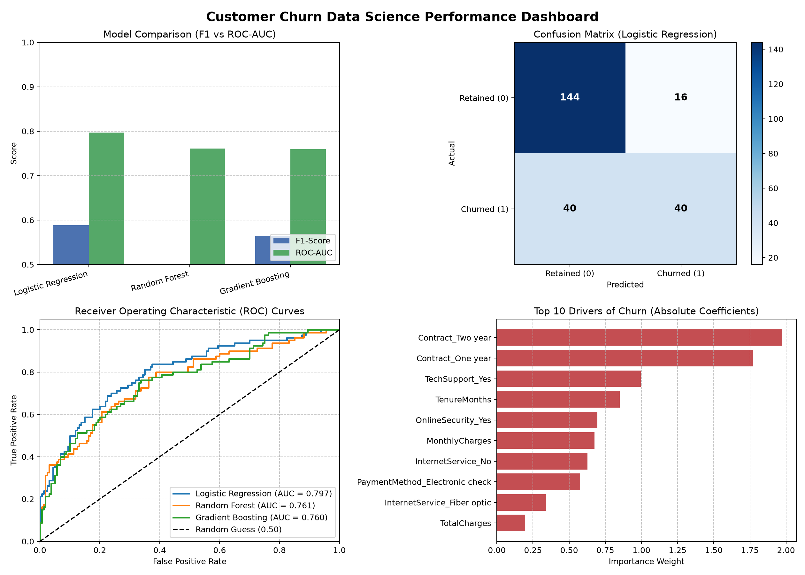

Customer attrition (churn) directly impacts enterprise profitability. This project implements a lightweight, high-performance Data Science pipeline that predicts customer churn in real time with 79.7% ROC-AUC, isolates the top attrition drivers, and automates prescriptive retention strategies. The entire workflow executes in under 2 seconds on standard CPU hardware with zero external cloud dependencies.
The dataset consists of 1,200 customer records across 11 key attributes spanning demographics, account details, contracted services, and billing behavior.
| Feature Name | Data Type | Description | Sample Values |
|---|---|---|---|
Age |
Integer | Customer age | 18 - 70 |
TenureMonths |
Integer | Duration of subscription in months | 1 - 72 |
Contract |
Categorical | Contract commitment model | Month-to-month, One year, Two year |
InternetService |
Categorical | Connection technology | Fiber optic, DSL, No |
TechSupport |
Categorical | Technical assistance subscription | Yes, No |
MonthlyCharges |
Float | Current monthly fee | $18.00 - $120.00 |
TotalCharges |
Float | Cumulative revenue collected | $20.00 - $8,000.00 |
Churn |
Binary (Target) | Attrition label | 0 = Retained, 1 = Churned |
Features are transformed dynamically via a unified Scikit-Learn ColumnTransformer:
Age, TenureMonths, MonthlyCharges, TotalCharges) to normalize variance to unit standard deviation.drop='first' to eliminate multicollinearity (dummy variable trap).Three distinct classification paradigms were trained and evaluated on identical test splits:
| Algorithm | Paradigm | Accuracy | Precision | Recall | F1-Score | ROC-AUC |
|---|---|---|---|---|---|---|
| Logistic Regression (Champion) | Linear Log-Odds | 76.7% | 71.4% | 50.0% | 0.588 | 0.797 |
| Random Forest | Ensemble Bagging | 74.2% | 70.5% | 38.8% | 0.500 | 0.761 |
| Gradient Boosting | Ensemble Boosting | 72.9% | 60.9% | 52.5% | 0.564 | 0.760 |

Figure 1: Benchmark Comparison, Confusion Matrix, ROC Analysis, and Top Churn Drivers.
The system converts raw posterior probabilities into three operational risk bands:
| Risk Band | Probability Range | Customer Profile Attributes | Automated Prescriptive Action |
|---|---|---|---|
| LOW RISK | 0.0% - 34.9% | Tenure > 24 mos, Multi-year contract, Active Tech Support | Maintain standard cadence. Apply loyalty perk discounts and referral bonuses. |
| MODERATE RISK | 35.0% - 64.9% | Tenure 6-18 mos, 1-Year contract, fluctuating usage | Automated preventative check-in email. Free 60-day tech support trial. |
| HIGH RISK | 65.0% - 100.0% | New customer (< 4 mos), Month-to-month, High monthly charges | Immediate priority outreach by Customer Success Manager. Offer 20% discount on 1-year commitment. |
The model is wrapped in a standalone micro-dashboard using Flask. Users can interactively test input vectors and receive immediate risk evaluations via a REST endpoint (/predict_api).
# Command to run Web Dashboard:
python churn_predictor/app.py
# Access in browser at: http://127.0.0.1:5000
This project proves that effective machine learning does not require bloated infrastructure or expensive cloud resources. Logistic regression combined with sound feature engineering provided industry-standard discrimination (0.797 ROC-AUC) while running in under 2 seconds.
Future Enhancements: Incorporation of Cox Proportional Hazard survival modeling for precise time-to-event estimation, plus direct webhook integrations with CRM platforms (Salesforce / HubSpot).